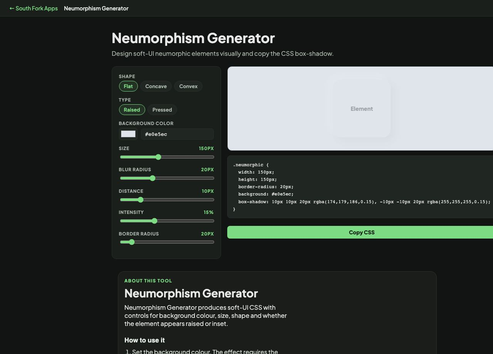

Neumorphism Generator
Design soft-UI neumorphic elements visually and copy the CSS box-shadow.
Neumorphism Generator
Neumorphism Generator produces soft-UI CSS with controls for background colour, size, shape and whether the element appears raised or inset.
How to use it
- Set the background colour. The effect requires the element and its container to share it.
- Choose the shape and whether it is raised or inset.
- Copy the generated CSS.
How the effect works, and its built-in problem
Neumorphism uses two shadows on the same element: a light one offset toward the light source and a dark one offset away. Because the element is the same colour as its background, those two shadows are the only thing defining its edges, which is what produces the extruded look.
That is also the flaw. With no colour or contrast difference between the control and the background, buttons in this style routinely fail WCAG's 3:1 requirement for interface components, and are difficult to perceive for anyone with low vision. The style is worth knowing and should be used with care.
When it helps
- Prototyping a soft-UI concept.
- Creating a subtly recessed input or a low-emphasis panel.
- Learning how paired shadows create perceived depth.
- Applying the style to decorative, non-interactive elements where the accessibility cost is lower.
Common mistakes
- Using it for primary buttons. If a control cannot be distinguished from the background, some users cannot find it.
- Applying it on a pure white or black background, where one of the two shadows has nowhere to go.
- Relying on the effect alone to signal interactivity. Add a label, a border or a focus state that does not depend on subtle shadow.
